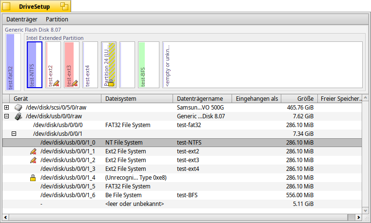
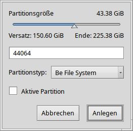

Deutsch
Deutsch Català
Català English
English Español
Español Français
Français Italiano
Italiano Magyar
Magyar Polski
Polski Português
Português Português (Brazil)
Português (Brazil) Română
Română Slovenčina
Slovenčina Suomi
Suomi Svenska
Svenska 中文 ［中文］
中文 ［中文］ Русский
Русский Українська
Українська 日本語
日本語 Datenträgerverwaltung
Datenträgerverwaltung
| Deskbar: | ||
| Ort: | /boot/system/apps/DriveSetup | |
| Einstellungen: | ~/config/settings/DriveSetup |
Datenträgerverwaltung ist ein Programm zum Erstellen, Löschen und Initialisieren von Partitionen. Aktuell ist es noch nicht möglich, bestehende Partitionen zu verschieben oder in ihrer Größe zu verändern. Man benötigt also entweder Platz auf einem unpartitionierte Teil einer Disk (vielleicht ein USB Laufwerk oder eine zweite Festplatte) oder man muss auf externe Werkzeuge, wie der GParted LiveCD zurückgreifen.
Oben ist die Partitionierung des unten ausgewählten Datenträgers graphisch dargestellt. Neben maximal vier Primären Partitionen, kann jede von ihnen eine Anzahl von erweiterten/logischen Partitionen enthalten. Über das + / - Symbol können derart "versteckte" Partitionen auf- und eingeklappt werden.
Die ausgewählte Partition kann über die Befehle im Menü oder mit der Tastenkombination ALT M, beziehungsweise ALT U in das System eingebunden oder ausgehängt werden.
Mit kann eine Partition auch komplett gelöscht werden.
 Eine neue Partition erstellen
Eine neue Partition erstellen
Wenn auf einem Datenträger ein unformatierter Bereich existiert, wie der Bereich <leer> im obigen Bild, kann man hierin mit (ALT C) eine neue Partition anlegen.
Es erscheint ein Dialog um Partitionsgröße und -typ einzustellen. Für eine Haiku-Installation wäre zu wählen. Ebenso, wenn man all die interessanten Haiku Feature, wie Attribute und Queries, nutzen will. Man bedenke jedoch, dass andere Betriebssysteme auf so eine Partition eventuell nicht zugreifen können.
Bei der Erstellung einer primären Partition - im Gegensatz zu einer erweiterten/logischen Partition innerhalb einer solchen Primärpartition - kann sie in diesem Dialogfeld noch mit gekennzeichnet werden. Der Haken muss also gesetzt werden, um von solch einer Partition Haiku booten zu können.
Um eine neu angelegte Partition verwenden oder ins System einbinden zu können, muss sie zuerst mit einem Dateisystem initialisiert werden.
Initialisierung einer Partition
Nur wenn eine Partition nicht ins System eingebunden ist, kann sie mit dem Menüpunkt initialisiert werden.

Beim Initialisieren muss ein Name für diese Partition und die Blockgröße angegeben werden. Ein "Block" ist dabei der Speicherplatz in Byte, den eine Datei auf dem Datenträger mindestens belegt. Den vorgeschlagenen Wert von 2048 sollte man am besten beibehalten, außer man ist sicher, dass man wirklich einen anderen braucht.
Durch das Initialisieren gehen alle Daten auf dieser Partition unwiederbringlich verloren!